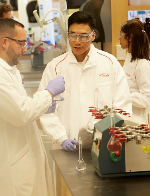

Better Health, Brighter Future
Takeda is a patient-focused, values-based, R&D-driven global biopharmaceutical leader committed to the purpose of bringing Better Health for People and a Brighter Future for the World. Rooted in Japan, more than 240 years old, >50 years in Indonesia.
Responsibly translatescience into highly innovative, life-changing medicines and vaccines, with core theraupetic areas in Vaccines, Oncology, Rare Disease, Gastro-enterology, Plasma-derived Therapies, and neuroscience.
More info, please visit: https://www.takeda.com
